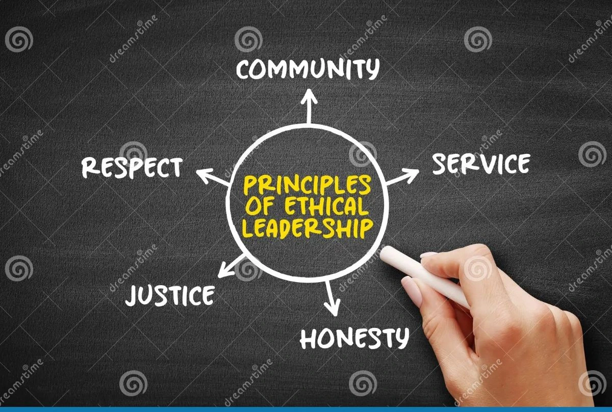

Courses
AIEG delivers an integrated suite of programmes and consulting services designed to foster ethical transformation, institutional reform, and sustainable governance across both public and private sectors.
Courses

Duration: 4–5 Days + Follow-Up Coaching (Customisable)
Target Group: Public Representatives, Senior Managers, Executives
Learning Outcomes
- Understand how corruption corrodes institutions, economies, and public trust
- Recognise personal vulnerabilities and ethical grey zones
- Apply ethical leadership models to real-world dilemmas
- Strengthen organisational cultures that resist unethical behaviour
- Commit to a personalised Integrity Charter
Core Modules
Day 1 — Foundations of Ethical Leadership
- What corruption looks like in modern political systems
- Types of corruption: petty, grand, state capture, regulatory capture
- Case studies: SAA, NSFAS, international procurement scandals
- Values-based leadership: King IV, Batho Pele, Ubuntu
Day 2 — Personal Vulnerabilities & Integrity Mapping
- Psychology of unethical decision-making
- Pressure–Opportunity–Rationalisation (Fraud Triangle)
- How leaders justify unethical choices
- Building personal integrity maps
Day 3 — Conflict of Interest Management
- Recognising real vs perceived conflicts
- Gift policies, procurement influence, family trust concerns
- Lifestyle audits
- Designing and declaring conflicts in practice
Day 4 — Building Ethical Institutional Culture (Optional)
- Tone at the top vs tone in the middle
- Ethics in recruitment, promotion and performance
- Departmental Integrity Charter development
- Group presentations: "My Ethical Leadership Commitment"
Duration: 3–4 Days
Target Group: Government Officials, Compliance Teams, Managers, Committee Chairs
Learning Outcomes
- Identify corruption risk points in systems and processes
- Strengthen internal controls and procurement safeguards
- Conduct corruption risk assessments
- Build strong audit trails and reporting mechanisms
- Apply anti-corruption legislation and best-practice standards
Core Modules
Day 1 — Understanding Corruption Risks
- Where corruption hides: procurement, HR, budgeting
- Governance weaknesses that create opportunities
- Red flags in practice
Day 2 — Designing Internal Controls
- Control frameworks (COSO, PFMA, Companies Act)
- Segregation of duties and authorisation levels
- IT controls and digital risk
Day 3 — Whistleblowing & Reporting Culture
- Protected Disclosures Act
- Building safe reporting channels
- Responding to tip-offs and misconduct
Duration: 3–4 Days
Target Group: Politicians, Board Members, Senior Managers, Regulators
Learning Outcomes
- Understand transparency as a defence against corruption
- Apply governance and oversight frameworks
- Strengthen departmental and SOE accountability mechanisms
- Practise committee-style oversight
- Use media and digital tools for transparency
Core Modules
Day 1 — Governance Overview
- King IV principles
- Roles: oversight vs executive
- Why governance collapses: Eskom, SAA, Transnet
Day 2 — Tools of Accountability
- Public reporting frameworks
- Strategic plans, APPs, KPIs, performance contracts
- Committees: SCOPA, audit committees, internal audit
- Using dashboards for transparency
Day 3 — Transparency & Public Communication
- Role of media
- Dangers of secrecy
- Open data & digital transparency
- Stakeholder engagement
Day 4 — Simulated Oversight Hearings
- Parliamentary-style oversight hearing
- Interrogating a fictional departmental report
- Detecting wrongdoing and irregular expenditure
- Drafting oversight recommendations
Customised Programs Available on Request
Purpose
To strengthen analytical reasoning, evidence-based decision-making, and resistance to manipulation, bias, and populist narratives.
Learning Outcomes
- Recognise logical fallacies and cognitive biases
- Analyse information objectively before making decisions
- Use structured reasoning in governance and oversight
- Distinguish fact from perception and rhetoric
- Strengthen the quality of committee, board, and executive decision-making
Module Components
Foundations of Critical Thinking
- Evidence vs opinion
- Logical structure of sound decision-making
Cognitive Biases in Leadership
- Confirmation bias, groupthink, sunk-cost fallacy
- How bias leads to corruption and poor decisions
Analytical Tools for Governance
- Decision trees, root-cause analysis, systems thinking
Critical Thinking in Public Life
- Separating political messaging from factual analysis
- Evaluating procurement proposals critically
Simulation Exercise
- Participants critique a flawed report and identify red flags
Purpose
To build self-awareness, emotional stability, and interpersonal integrity among leaders responsible for high-stakes decisions.
Learning Outcomes
- Understand their emotional triggers and pressures
- Strengthen empathy, accountability, and relationship management
- Remain stable under political, social, and administrative pressure
- Build trust with teams and communities
- Communicate ethically and authentically
Module Components
Self-Awareness & Emotional Triggers
- Blind spots and leadership vulnerabilities
Self-Regulation Under Pressure
- Managing stress, conflict, and ethical dilemmas
Empathy & Ubuntu-Based Leadership
- Connecting with communities and staff
- Compassion as a governance tool
Responsible & Ethical Decision-Making
- How emotions influence corruption or integrity
Practical EQ Lab
- Difficult conversations
- Role-play: responding to ethical crises